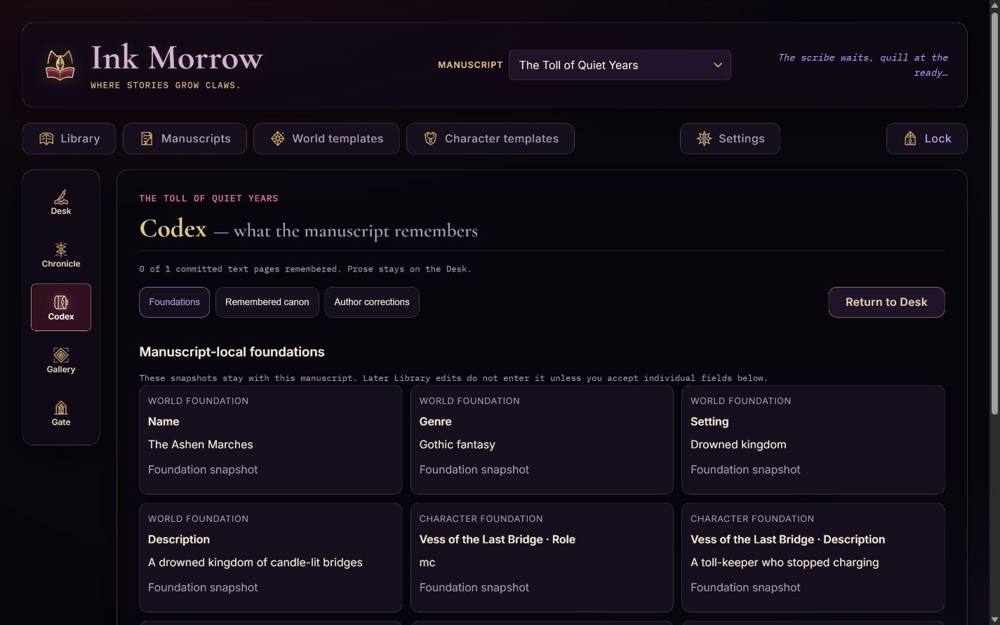

Write, remember, illuminate, bind-and keep every story under your control.
4.1 · single-owner self-hosted edition
Ink Morrow 4.1.0 · September 2026
Ink Morrow 4.0Start here
Before the first page
Know the shape of the Scriptorium
Ink Morrow is a self-hosted, single-owner environment for human-led, AI-collaborative writing. You supply intent, taste, direction, revision, and the final word on canon; the Scribe accelerates drafting, continuity work, illustration, and narration without taking ownership of the manuscript.
Know your data line
A new 4.x installation needs an empty DATA_DIR; never point it at 3.x. A valid 4.0.x installation upgrades to 4.1 in place only after a full Gate backup and a cold copy of the stopped data directory.
Library
Desk
Chronicle
Codex
Gallery
Gate
LibraryChoose manuscripts and manage reusable world and character templates.
DeskRead, edit, direct, generate, and turn the current page.
ChronicleNavigate volumes, chapters, pages, history, and recovery.
CodexInspect what the story remembers and apply explicit corrections.
GalleryUpload or generate art, then place it without changing prose or canon.
GateBack up the project, publish formats, or share a frozen reading copy.
The collaboration-and its boundary
The author leads
Set the premise and constraints, direct each page, judge the prose, revise it, correct remembered facts, select art, and decide what leaves the installation.
The AI accelerates
Generate and prepare pages, extract continuity, suggest foundations, paint, and narrate. These actions send necessary context to your configured provider.
You can still write, organize, import, back up, and publish without AI. That is a resilience and control feature-not the intended center of the experience.
Contents
01Install & unlock3
06History & recovery9
02Library & navigation4
07Chronicle & Codex10
03Begin a manuscript5
08Gallery & Gate14-15
04Templates6
09Safety & operations16-18
05The Desk7-8
10Quick reference19
ALore of the Scriptorium20
BChoosing AI models21-25
11Example user journeys26-35
USER GUIDE · 4.12
Ink Morrow 4.0Install & unlock
01 · First run
Open a sealed local Scriptorium
Ink Morrow runs on your own machine rather than in a maintainer-operated cloud. By default, only a browser on that same machine can reach it. Node.js 22.5 or newer is required.
Quick installation
git clone https://github.com/rthorman/ink-morrow.git
cd ink-morrow
bash setup.sh
$EDITOR backend/.env
./start.sh
Open http://localhost:3000. On the first launch, the terminal prints a one-time setup code. Enter it in the browser, then choose a distinctive password or passphrase of 15-128 characters.
Before starting 4.1
For a new install, create an empty data directory. For an existing 4.0.x install, back it up in Gate, stop the app, and cold-copy its complete data directory before updating.
Configure a provider key for the core collaborative workflow. Local writing and project care remain available without one.
Start the server and keep the terminal available for status and recovery.
First unlock
Copy the one-time code from the server terminal.
Set the owner password. There are no usernames or multiple roles.
Enable Keep this scriptorium unlocked only on a device you control.
What the network words meanlocalhost and 127.0.0.1 mean “this computer only.” A LAN is your home or office network. HTTP sends traffic without transport encryption; HTTPS encrypts the trip between browser and server, so a password or manuscript is not readable to other equipment along the route.
If another device needs durable access, keep Ink Morrow on 127.0.0.1 and put an HTTPS reverse proxy in front of it. In plain language, that is a small front-door service which receives the encrypted connection and passes it to Ink Morrow locally. If that setup is unfamiliar, ask someone who administers networks rather than exposing Ink Morrow directly over HTTP.
Daily lock and recovery
Lock revokes the current browser session.
Settings → Security changes the password and revokes other sessions.
If the password is forgotten, stop the server and run npm run auth:reset -- --yes from backend. This removes the local owner and sessions, not manuscripts or media.
Access control, not disk encryptionThe web password does not encrypt the SQLite database, images, audio, or portable archives. Use full-device encryption and protect exported files.
01 · Install & unlock3
Ink Morrow 4.0Library & navigation
02 · Orientation
The Library is the threshold
The Library owns manuscripts, reusable templates, import and restore, recent work, recovery notices, and the path to Settings. Select a manuscript to enter its five-destination workspace.
1234
Desktop Library. The gothic frame orients you; actions remain literal and the manuscript surface stays quiet.
1Manuscript selector - switch the active manuscript.
4Start actions - continue, begin, import, or open the Desk.
Navigation stays named
Desktop and landscape tablet use a labelled navigation rail. Portrait tablet and compact layouts use the same five labels in a bottom bar. Nothing important depends on hover or a hidden gesture.
A useful distinctionGlobal templates can be reused. Manuscript-local snapshots belong to one manuscript. The Codex explains the latter; Library templates never silently rewrite an existing manuscript.
02 · Library & navigation4
Ink Morrow 4.0Begin a manuscript
03 · One sheet, three paths
Begin with prose, a seed, or an import
Choose Begin a manuscript or Import prose from the Library. The start sheet asks only for information needed by the path you choose.
Write the opening
Enter or paste the first page, then let the Scribe continue under your direction. This is a useful way to establish your voice before collaboration begins.
Give the Scribe a seed
Provide a premise and optional direction, then review and shape the generated opening. This is the fastest route into the collaborative loop.
Import existing prose
Map recognized headings to structure, or begin as a single chapter. Review the result before continuing.
The short start flow
Choose one start path and name the manuscript.
Select maturity, narrative role, world, and cast only where relevant.
Optionally open Foundations for premise, voice, point of view, tense, arcs, and constraints.
Enter the Desk with Volume I and Chapter I already created.
Foundations are guidance, not a gate
AI suggestions in Foundations are drafts. Accept them field by field. You can begin writing without completing every setting, and you can return later.
Human ledThe Scribe proposes; you direct, accept, rewrite, reject, and correct. Its continuity record is inspectable evidence, not authority over your prose.
AI acceleratedProvider setup appears when collaboration first needs it. Read the provider, model, data, and cost review before accepting.
03 · Begin a manuscript5
Ink Morrow 4.0Templates
04 · Reusable material
Build worlds and characters once
World and character templates live in the global Library. They are reusable source material-not remote truth imposed on every manuscript.
The global world catalogue. Create without an image when you want a fully local path; painting is a separate paid action.
World templates
Setting, genre, atmosphere, and a lorebook of canonical facts.
Optional establishing art.
Reusable across manuscripts.
Character templates
Identity, appearance, personality, background, and home world.
Optional reference portrait.
Reusable in centered or ensemble casts.
What happens when you cast a manuscript?
Library template
Choose for manuscript
Frozen snapshot
Pages add memory
Author corrects
A manuscript receives a local snapshot. Later Library edits do not silently change that snapshot. When a template has changed, Codex can show a field-level difference and lets you accept only the fields you want.
Canon ruleReusable sheets are reference material. Committed pages, remembered canon, and explicit author corrections define the running story.
04 · Templates6
Ink Morrow 4.0The Desk
05 · The writing loop
The manuscript stays at the center
12345
The Desk on desktop. Controls frame the prose; artwork never sits behind the manuscript.
1Five stable manuscript destinations.
2Active manuscript and measured session/manuscript cost.
3Previous/next page controls.
4Read-aloud and media tools.
5Editable, quiet manuscript surface.
The ordinary loop
Read
Edit if needed
Direct or leave blank
Turn the page
Repeat
Prepared successorAfter a successful page, Ink Morrow can quietly prepare exactly one successor. Prepared prose is inert: it does not enter canon or continuity until you commit it.
05 · The Desk7
Ink Morrow 4.0Direction & prepared pages
05 · The writing loop
The direction changes the action
Portrait tablet keeps the five destinations named and the manuscript comfortably readable.
When direction is empty
If a prepared page waits, Next Page commits that exact prose. It does not call the provider for a different version.
When direction has text
The action becomes Generate as directed. Pressing it deliberately replaces the waiting preview with a new paid request.
If you clear the direction
The original prepared page is still waiting. The action returns to Next Page.
If a request fails
No page is added. Your direction stays visible, and Try again names the recovery path.
Cost realityA normal AI-assisted page may involve prose, continuity extraction, and preparation of the next page. Estimates are not invoices. Set a hard spending limit on a dedicated provider key.
Other Desk actions
Edit active page changes current prose.
Rewrite last page requests a new version.
Read aloud / Auto-read invokes the selected narrator.
Open Gallery takes you to the single place for uploads, AI painting, metadata, and placement.
05 · Direction & prepared pages8
Ink Morrow 4.0History & recovery
06 · Know which change you are making
Copyedit prose-or return canon
An older page offers two deliberately different operations. Choose by consequence, not by mood.
Action
What changes
What does not
Use when
Copyedit this page
Visible and exported wording.
Remembered Codex state is not recalculated.
Fix spelling, phrasing, and presentation without branching canon.
Return manuscript to this page
Removes all later canonical pages and prepared work.
The removed suffix is retained for bounded recovery.
You want the narrative to continue from an earlier point.
Read the exact rangeThe return confirmation names the volumes, chapters, pages, narrative count, prepared work, and recovery period. The action reads Return and remove N later pages.
Chronicle keeps the trail visible
Navigate structure
Volumes contain chapters; chapters contain pages.
The current tail, prepared page, memory coverage, art placements, and recovery records have distinct markers.
Rename historical structure without pretending prose can be freely reordered.
Recover safely
Recovery records show removal time, range, and expiry.
One-click restore is offered only when the current canon still permits it.
If later canon diverged, export the removed material rather than silently merging it.
06 · History & recovery9
Ink Morrow 4.0Chronicle & Codex
07 · Structure and truth
Chronicle says where; Codex says what
Chronicle
Use it to move through volumes, chapters, pages, historical states, and recovery records.
Question: Where am I in the work?
Codex
Use it to inspect manuscript-local foundations, page-provenanced remembered canon, arcs, threads, and corrections.
Question: What is true now?
The three Codex layers
Foundations - author intent and the manuscript’s local world/cast snapshots.
Remembered canon - facts, events, conditions, goals, threads, and arc movement linked to source pages.
Author corrections - explicit authoritative overrides with visible impact state.
Correct a remembered fact
Select a fact or field and inspect its current value and page evidence.
Enter the corrected value.
Review detected later conflicts.
Choose to apply the correction, mark the prose intentional, return the manuscript, or cancel.
Keep the resulting correction record inspectable.
AI does not get the last wordAI may summarize possible impacts, but it never applies a correction. Existing prose is never automatically rewritten.
Coverage and repair
If a page lacks a continuity record, the Codex identifies it. Building or rebuilding memory is explicit, proceeds page by page, and receives a cost review. It never triggers a surprise whole-story replay.
07 · Chronicle & Codex10
Ink Morrow 4.0Chronicle
07 · The manuscript through time
Read structure, history, and memory coverage
Chronicle is not another writing screen. It is the manuscript's map and audit trail: use it to find a page, understand what happened to it, and see whether the Archivist successfully remembered its canonical revision.
Outline
Expand volumes and chapters, then select a page. Stable IDs keep references intact even when titles or order labels change.
History
Inspect immutable revisions and distinguish the canonical prose used for memory from a later display-only copyedit.
Coverage
Each canonical page shows memory as pending, ready, or failed. Missing coverage is not treated as an empty memory.
Recovery
See removed suffixes, their exact range, expiry, and whether exact restore remains safe against the current surviving head.
A useful inspection rhythm
Choose the manuscript and open Chronicle.
Expand the relevant volume and chapter.
Select the page, then compare visible prose, canonical revision, and memory badge.
Open history when wording and remembered truth appear to disagree.
Follow a failed memory badge into its specific diagnosis or Codex repair.
Copyedit is honest divergenceA historical copyedit improves what readers see and what exports contain. It does not claim the Archivist reread that page. Chronicle keeps both pointers visible so you can decide whether a deeper canonical change is needed.
Return is not reorderReturning the manuscript to an older page truncates all later canon and creates bounded recovery evidence. Read the named range before confirming.
07 · Chronicle11
Ink Morrow 4.0Codex
07 · Author truth and extracted evidence
Use Codex as a ledger, not an oracle

Codex keeps foundations, Author Canon, remembered evidence, corrections, arcs, and threads in one manuscript-local view.
Author Canon
Create and edit facts, world events, people, places, factions, objects, rules, and other truths that the story should obey. Every edit creates a version; retirement preserves history.
Remembered canon
The Archivist extracts structured facts, events, character states, threads, and arc movement. Each item cites the page and canonical revision that produced it.
You can add what prose has not said yetAuthor Canon is for deliberate knowledge: a hidden world rule, an off-page event, a private character fact, or a constraint the Scribe must respect. It does not need to be discovered by AI first.
Editing without erasing evidence
Correcting or retiring an item does not rewrite the original extraction or historical prose. Codex layers the author's current truth over preserved evidence, then identifies later material that may need attention.
07 · Codex12
Ink Morrow 4.0Memory & repair
07 · When the Archivist cannot file a page
A failed memory is specific-and clickable
The prose can commit successfully while its continuity extraction fails later. Ink Morrow keeps the page valid, marks memory incomplete, and stores the error code, reason, configured Archivist model, and repair route.
What to do
Click the failed memory badge in Chronicle.
Read the actual category: provider refusal/timeout, invalid JSON, schema mismatch, missing evidence, context pressure, or model availability.
Confirm Settings shows the intended server-configured Archivist. A browser-local Scribe choice does not control automatic memory.
Open the linked Codex repair for that page and review the cost/data boundary.
Retry once, then compare the new specific result. Repeated failure is evidence to diagnose, not a reason to replay the entire novel.
Large cast and world context
On a heavier manuscript the relevant context may be much larger even when another installation works with the same provider. Ink Morrow prioritizes context in this order:
Main Character
Support cast
Relevant world
Background cast
Older evidence
Perspective anchorIf the story is Main Character driven, the Main Character remains the perspective anchor whether or not the current page names them. Mention is not the same as narrative centrality.
Why repair may still fail
Strict memory must be valid structured JSON and must cite evidence. Even valid-looking JSON is refused when it contains only a generic summary and empty lists. Ink Morrow tells one corrective attempt the exact defect. Information entropy, a very large cast, ambiguous naming, contradictory pages, or an unsuitable model can still defeat repair. The correct response is a precise failure, never invented memory.
Startup protectionAn explicit typo or unavailable value in CONTINUITY_MODEL prevents Ink Morrow from starting. If the line is absent, the saved Settings choice is used; a fresh install starts with google/gemini-2.5-flash-lite. Setup never rewrites an existing .env.
Applying corrections
After coverage is ready, select the affected fact, inspect its citations, enter the authoritative value, review likely later impacts, and apply only when satisfied. AI may summarize impact but cannot press Apply, retire Author Canon, or rewrite prose.
07 · Memory & repair13
Ink Morrow 4.0Gallery
08 · Illuminate without changing canon
Upload or paint, then place deliberately
Two equal paths
Upload an image
Choose a file with the native picker.
Review the local preview and metadata-removal notice.
Add a title and useful alt text.
Keep it in Gallery or place it before/after a narrative page.
Paint with AI
Write or condense a visible prompt.
Choose references and quality deliberately.
Review cost and generate.
Place the result exactly like uploaded art.
Placement is noncanonical
Moving or unplacing art does not change page numbers, prose, or continuity. Art anchored to a page that is later removed remains stored in Gallery but becomes unplaced.
Upload privacyAn upload is validated, normalized to metadata-free WebP, and kept local. It is not sent to a provider unless you later select it explicitly as a generation reference and grant permission.
Provider refusalIf an image provider refuses a prompt, Ink Morrow explains the refusal, keeps the original upload and prompt unchanged, and shows any sanitized editable prompt. Nothing retries until you press again.
Technical errors stay technical
Unsupported encoding, damaged files, excessive file size, or excessive dimensions are reported as constraints. The application does not semantically classify or moralize about uploaded subject matter.
08 · Gallery14
Ink Morrow 4.0Gate
08 · Let the work leave safely
Backup, publication, and sharing are different
Back up the project
Create a full-fidelity .inkmorrow v2 archive. Choose whether to include visuals, audio, and working history.
Prepare for publication
Review one normalized book structure, metadata, front/back matter, art, and style before choosing formats.
Share a reading copy
Create an immutable, expiring, revocable snapshot. Anyone holding its capability link can read it.
You need…
Choose…
Remember…
Restorable project state
Full project backup
Portable archives are unencrypted and exclude local credentials, sessions, secrets, and share capabilities.
A book for readers/editors
Publication export
Multiple selected formats come from one normalized snapshot, keeping metadata and structure aligned.
Temporary browser reading
Public reading share
The copy is frozen. Create a new snapshot after material manuscript changes.
Choose a file by what happens next
.inkmorrow
A restorable Ink Morrow project backup, not an ebook. Keep it private and use Gate to restore it.
EPUB
A reflowing ebook: the reader can change type size and the pages adapt. Best for ebook readers and reading apps.
PDF
A fixed-page document. Best when exact page appearance, printing, or simple review matters.
DOCX / ODT / RTF
Editable word-processing files. Choose the format your editor or publisher actually uses.
HTML / Markdown / text / JSON
Open or technical formats for websites, simple text tools, or data workflows; they are rarely the friendliest reading copy.
Share safely
Review the included revision, art, and expiry.
Create the share only behind a correctly configured HTTPS reverse proxy.
Copy the returned link once and send it through an appropriate private channel.
Revoke it in Gate as soon as it is no longer needed.
Capability linkAnyone with the link can read the frozen snapshot until expiry or revocation. Never place the capability in query strings, analytics, referrers, proxy logs, or public screenshots.
08 · Gate15
Ink Morrow 4.0Backup & restore
09 · Preserve the whole installation
Use two forms of backup
Portable project backup
Create it in Gate, include the material you need, download it, and store it on encrypted storage.
Portable: good for reviewed transfer and restore.
Cold DATA_DIR copy
Stop Ink Morrow and copy the entire data directory as one unit.
Complete: also preserves owner, sessions, recovery state, and local share records.
Before an upgrade
Record the installed commit, Node version, and data paths.
Finish active provider/publication jobs and create a full Gate backup.
Stop Ink Morrow and make a dated cold copy of the complete data directory.
Install the reviewed release and validate the catalogue before resuming work.
Restore a 4.x backup
Start 4.1 with a new, empty DATA_DIR.
Open Gate and preflight the archive.
Review exposure and collisions; choose Replace everything only for an intentional full restore.
Verify hierarchy, revisions, continuity, media, prepared work, snapshots, and settings.
Export again and compare with the source evidence.
Never mix generations4.1 upgrades a valid 4.0.x database in place but does not open 3.x databases or import format-v1 archives. Never combine a database from one backup with media or transfer directories from another.
What the portable archive deliberately omits
Passwords, sessions, provider secrets, remembered paid consent, recovery credentials, and public-share capabilities/records. The archive itself is not encrypted.
09 · Backup & restore16
Ink Morrow 4.0Provider, cost & privacy
09 · Know the boundary
The partnership is the point; control stays human
Ink Morrow is built for an author and AI to work in a deliberate loop. It has no maintainer cloud, analytics, advertising, tracking pixels, or crash telemetry; the operator controls the installation and chooses the provider connection.
Provider compatibility is not promisedOpenRouter is the only AI supplier ever tested with Ink Morrow. Another supplier may not expose compatible models, may not support image generation, narration, reasoning controls, or model discovery, and may not work at all. An “OpenAI-compatible” label is not enough to guarantee the complete Ink Morrow workflow.
Credential choices
Environment: a key in the operator-managed backend environment.
Session memory: available only for the current process session.
Encrypted vault: saved locally and unlocked after restart. APIs never return the secret.
Spend limit firstCreate a dedicated provider key and set a hard upstream spending limit before using AI. Ink Morrow’s live estimates and session/manuscript totals are good-faith guidance, not an invoice or guarantee.
Typical provider data
Directions and recent prose.
Relevant remembered canon.
Selected world, cast, tone, and model settings.
Text sent for narration.
Image prompts and explicitly selected references.
Prepared successor context.
Continuity-extraction context.
Quality and generation settings.
Browser supportInk Morrow is tested only in Google Chrome. A current standards-respecting browser such as Edge, Firefox, or Safari should work. Should. If something behaves strangely elsewhere, reproduce it in Chrome before deciding the application itself is broken.
Local control remains available
Browsing the Library, reading pages, manual editing, organizing, local image upload, publication export, and portable backup do not require an AI call. This lets you keep working and care for the project without a provider; the largest creative gains still come from directing, reviewing, and revising AI-assisted work.
Local files remain readableThe login protects web access, not storage at rest. Anyone who can read the operating-system account or unencrypted disk can read the database and media. Use device encryption and access-controlled backups.
When something is exposed
Provider key: revoke it at the provider immediately.
Share capability: revoke the share in Gate.
Archive: treat it as manuscript disclosure.
Logs: never publish real prose, prompts, cookies, authorization headers, local paths, or provider responses.
09 · Provider, cost & privacy17
Ink Morrow 4.0Comfort & troubleshooting
09 · Daily practice
Make the Desk fit the way you work
Input and reading
Every primary path works with keyboard, touch, mouse, or stylus.
Visible focus and labelled controls support keyboard navigation.
Portrait tablet keeps the bottom navigation stable; desktop uses a rail.
Typography, line length, manuscript theme, and reduced motion persist in Settings.
Placed publication art should have useful alt text.
Routine states
Saved / Saving appears quietly near the page.
Offline-kept locally means browser-local editing state needs the server again.
A low-storage banner appears below 1 GB or 5% free space.
Provider and publication work should settle before shutdown or backup.
Fast diagnosis
Symptom
What to check
4.1 refuses to start
Preserve the exact error. Confirm Node 22.5+ and the intended 4.0.x or empty 4.x DATA_DIR; never substitute a 3.x database.
Unlock fails repeatedly
Wait for the temporary throttle, verify the password, or use terminal recovery after stopping the server.
AI action is unavailable
Open Settings; confirm provider profile, credential source, vault unlock, model role, and network access.
Next Page is disabled
A successor may still be preparing. Do not start a competing request.
Continuity looks wrong
Open Codex, inspect page evidence, and apply an explicit correction or rebuild missing coverage.
A removed suffix cannot restore
Later canon diverged. Export the recovery record rather than forcing a merge.
A share does not open
Check HTTPS proxy configuration, expiry, and revocation. Never move the capability into a query string.
Before asking for helpRecord the application version, browser, Node version, exact visible error, and correlation reference. Redact manuscripts, credentials, cookies, share links, prompts, and local paths.
09 · Comfort & troubleshooting18
Ink Morrow 4.0Quick reference
10 · Leave this page near the Desk
A safe author’s checklist
Before writing
The intended 4.x data directory is active.
The provider key has a hard spend limit.
The correct manuscript is selected.
World and cast snapshots are the intended ones.
During writing
Empty direction commits the waiting page.
Typed direction deliberately requests a replacement.
Copyedit changes prose, not remembered canon.
Return manuscript removes later canon with bounded recovery.
Before sharing
The snapshot revision and included art are correct.
HTTPS is configured and logs omit capability headers.
VersionThis guide describes Ink Morrow 4.1.0. Consult the documentation shipped with the installed tag before an update or restore.
The next page is yours.
Lead with intent. Let the Scribe accelerate. Keep canon human, the provider bounded, and the backups close.
10 · Quick reference19
Ink Morrow 4.0Addendum · Lore
A · The tribe behind the threshold
The Scriptorium exists to serve the Story
It stands in the hour between the last candle and dawn: an impossible house of black oak, moonlit glass, chained archives, and doors that open wherever an unfinished tale still calls.
Long ago, a nameless empire burned its histories so no future voice could contradict the throne. The fire consumed the royal archive, but not the Stories inside it. They fled into ink, shadow, and the margins of unwritten pages. Around those surviving sparks the Scriptorium grew, and from its living script came the first feline scribes-adult, self-possessed keepers of invention, memory, and illumination. No crown owns them. No model commands them. They answer to the Story, and they lend their craft to the author who leads it.
Scribe · Warden
Vesper Quill
Wine-black curls, amber eyes, ivory sleeves, and a fitted leather bodice mark the keeper of the threshold. Vesper hears the first sentence before it is spoken. She opens the door, guards the author’s intent, and waits with her quill poised-but never writes past the human hand that leads her.
Illuminator
Cinder, the Inkbreaker
Sleek and quick, with copper ears, a high dark-red tail of hair, and flowing sheer silks in garnet and gold, Cinder draws light through stubborn ink. She gives worlds a face, casts a silhouette, and turns scenes into illumination-without confusing the image for the truth of the page.
Archivist
Moth, Archivist of Forgotten Things
Silver-haired and grave in violet-black robes, Moth wears a narrow velvet collar whose small bell sounds when a fact is almost lost. She gathers revisions, broken threads, and discarded paths into her chained archive. She remembers evidence, not destiny, and yields every correction to the author.
The covenant of the tribe
The scribes can propose, remember, illuminate, bind, and guard. They cannot decide what a manuscript means, which truth should survive revision, or when a Story is finished. Those judgments belong to the author. Their promise is simpler and older: keep the work legible, keep its consequences visible, and never place the machinery above the tale it was built to serve.
The author leads. The tribe attends. The Scriptorium endures. All are servants of the Story.
ADDENDUM A · Lore of the Scriptorium20
Ink Morrow 4.0Addendum · Model selection
B.1 · The machinery behind the quill
A model is a tool, not a personality
An AI model is a trained software engine that turns an instruction and supplied context into an output. Text models continue language, image models render pixels, and speech models turn words into audio. They do not open your database or understand the whole manuscript unless Ink Morrow deliberately sends the relevant material.
Model
The particular engine, identified by a name such as anthropic/claude-fable-5. Switching it can change prose, reliability, speed, and supported features.
Provider
The service that receives the request, runs the model, and bills it. Ink Morrow has only been tested with OpenRouter.
Role
The job Ink Morrow assigns: Scribe, Archivist, image model, or Narrator. One model may suit one role and be poor at another.
Tribe Scribe
A first-class creative identity with tone, linguistic habits, interests, pacing, and an adult catgirl portrait. She supplies the artistic profile; the selected text model performs it.
Four different jobs
Author direction
Scribe writes
Archivist files
Image illuminates
Narrator reads
Scribe: writes pages, develops foundations, interprets the selected Tribe Scribe, and helps form image prompts. Prose judgment matters most.
Archivist: reads each committed canonical page and returns strictly organized Chronicle memory with evidence. Structured reliability matters more than eloquence.
Image model: paints portraits, scenes, and other art. Reference-image support and fidelity to recurring identities matter.
Narrator: produces spoken audio. Voice, language, output format, and long-form reliability matter.
Compatibility boundaryAn attractive model name in a catalogue is not proof that it can perform every Ink Morrow role. A text model may not return strict JSON. A speech model may produce audio that cannot become an MP3 audiobook. Another provider may omit model discovery, images, narration, reasoning controls, or work entirely.
What changes when the engine changes?
The same direction and the same Tribe Scribe can yield different sentence rhythm, restraint, dialogue, plot movement, fact handling, and willingness to follow a format. Treat a model change like changing the performer while keeping the score: recognizable intent may remain, but interpretation changes.
ADDENDUM B · Model selection21
Ink Morrow 4.0Addendum · Model selection
B.2 · Choose by role
There is no single "best model"
Choose the engine that is good at the particular job, then test it against your manuscript. Benchmark rankings are evidence, not a substitute for reading the result.
Judge a Scribe by...
Prose voice without imitation-by-name shortcuts.
Character distinction and dialogue.
Respect for direction, maturity, pace, and canon.
Useful interpretation of the selected Tribe Scribe.
Stable output at your chosen page length.
Judge an Archivist by...
Valid structured output every time.
Exact quotations as evidence.
Correct separation of facts, goals, threads, events, and arc movement.
Prioritization of Lead, Supporting, and Background cast under pressure.
Low repair and retry rates on a heavy manuscript.
Judge images by...
Identity consistency across repeated characters.
Support for Ink Morrow's reference images.
Composition, anatomy, typography avoidance, and art-direction fit.
Availability at the requested aspect ratio and quality.
Judge narration by...
A voice pleasant over chapters, not merely one sentence.
Names, punctuation, dialogue, and emotional restraint.
MP3 output for consolidated audiobooks.
Reliable segmentation of long pages.
Grades ignore priceEvery grade in this addendum describes expected quality, reliability, and technical fit only. Price is displayed for planning and contributes nothing to the grade or recommendation.
ADDENDUM B · How to choose22
Ink Morrow 4.0Addendum · Model selection
B.3 · Read the catalogue
Useful language without the fog
Provider catalogues describe machinery in tokens, modalities, parameters, and giant context windows. Only a few of those details need to become author decisions.
Terms worth understanding
Context
The material supplied with one request: direction, selected canon, world, cast, Scribe profile, and recent prose. A giant advertised context window does not mean Ink Morrow sends the whole book, nor that the model uses everything equally well.
Token
A small piece of text used for provider accounting. Users should normally think in pages; the provider's token rate is only an ingredient in the estimate.
Reasoning
Extra internal work before the answer. It can help with dense constraints and can add time and billed output. More is not automatically better prose.
Structured output
A response forced into a defined JSON shape. The Archivist needs this discipline so Chronicle can file facts safely.
Preview
A model offered before its interface and behavior are considered settled. It may be excellent and still change or disappear sooner than a stable model.
How the page estimates workThe comparisons use one ordinary 400-word page. The writing estimate assumes about 1,800 input tokens and 600 output tokens; the Chronicle estimate assumes about 1,500 input and 650 output. Your world, cast, Scribe profile, reasoning level, retries, provider routing, and actual response can move the price substantially. The paid-review screen and cost ticker are more relevant than this printed snapshot.
A sensible trial
Try the same bounded direction with two candidates and read blind if possible.
Check voice, character distinction, canon, and pacing over several pages rather than one lucky result.
Commit test pages and inspect Chronicle evidence plus any repair attempts.
Test one recurring portrait and one narration sample before changing an established workflow.
Printed prices expireThe live paid-review screen uses the current provider catalogue and your current target page length. It is always more relevant than a number printed in this guide.
ADDENDUM B · Catalogue language23
Ink Morrow 4.0Addendum · Model report card
B.4 · Text models · 2 September 2026
Current candidates for writing and memory
Grade key: A+ exceptional; A strong; B usable with a meaningful compromise; C weak fit; D avoid for that role. "Provisional" means promising but too new for confident production advice. Prices are estimates per ordinary 400-word page, not quotations.
Current working and tested Archivist baseline. Its structured output works with the compact memory contract; still test it against your densest cast.
Reading the two pricesWriting page is the Scribe call. Chronicle pass is the separate automatic Archivist call after canon commits. If the same model fills both roles, add them. Reasoning and corrective retries can add further billed work.
Evidence, not revelation
The prose grades use current public creative-writing comparisons alongside technical compatibility. Fable 5 leads, Opus 4.6 High follows, and Gemini 3.7 Flash High is a strong preliminary third in the Creative Writing Arena. Archivist grades instead emphasize JSON Schema support, evidence discipline, parameter fit, and actual Ink Morrow results under a bounded heavy-cast prompt. A catalogue capability claim is not proof that a model works reliably in this application.
The operator sets server-owned defaults in backend/.env and restarts Ink Morrow. The author can choose another writing model and reasoning level in Settings - Writing AI. Narration is selected in Settings - Narration. The browser-local writing choice does not silently replace the server-owned Archivist.
Never trust a copied slug foreverConfirm that each exact model appears in the live OpenRouter catalogue before changing an installation. A bad explicit CONTINUITY_MODEL correctly prevents startup rather than letting every new page lose memory silently.
Current expressive MP3 alternative. Audition a full page; a compelling sentence is not yet an audiobook voice.
Gemini speech models
C
Catalogue-dependent
Individual reading can work, but Ink Morrow's PCM fallback is unsuitable for its consolidated MP3 audiobook flow.
A complete illustrated-page exampleQuality-first prose plus Chronicle memory plus one low/1K Grok image with no reference is roughly $0.0884. Narrating the page with GPT-4o Mini TTS, if available, brings that example to roughly $0.0900. Three image references add $0.03. A retry bills another attempt. These examples describe provider work, not a subscription or fixed fee.
Model availability, provider behavior, rankings, and prices change. This report was checked on 2 September 2026. The live catalogue, paid-review estimate, recorded provider usage, and your own manuscript trials outrank this printed snapshot.
ADDENDUM B · Recommended stack25
Ink Morrow 4.1Example journeys
11 · Choose only what serves the manuscript
There is more than one honest path
Ink Morrow's rooms are designed to work together, but they are not a compulsory checklist. Start from the outcome you need, then enable only the provider work and supporting tools that earn their place.
Journey
Uses
Deliberately skips
Best for
Manual and local
Library, Desk editing, Chronicle navigation, local uploads, Gate backup/export
Every provider-backed action
Maximum local control or working without a provider
Each path distinguishes local actions from calls that send selected context, text, or images to the configured provider. A provider key never makes every feature mandatory.
Safe ending
Every path ends by preserving or deliberately delivering the work: a Gate archive, a publication export, a revoked/expiring share, and—before upgrades—a cold data-directory copy.
A sound defaultBegin with the smallest path that achieves the goal. Add a feature when its benefit is clear, review its cost and exposure boundary, and keep the manuscript usable if that feature is later unavailable.
11 · Journey map26
Ink Morrow 4.1Journey · Manual and local
11.1 · No optional AI or provider work
Bring your own words; keep every step local
Mara has a finished novella draft and wants Ink Morrow's structure, revision trail, art placement, and export tools without sending prose to an AI provider.
PrerequisiteA sealed local installation. No provider profile or API key is required for this journey.
Start in Library. Create a manuscript from manual prose or import the draft. Review detected volumes, chapters, scene breaks, title, and maturity before accepting the structure.
Work at the Desk. Read and edit pages manually. Save deliberate copyedits; do not press provider-backed Write, Rewrite, or Read aloud controls.
Organize in Chronicle. Rename volumes and chapters, move through stable pages, and inspect revision history. If a wrong turn removes a suffix, use the bounded recovery record rather than rebuilding by hand.
Use art without AI. Upload owner-selected images in Gallery. Review normalization and metadata removal, add useful alt text, then place images before or after stable pages.
Publish from Gate. Freeze the reviewed display prose and selected placed art into a publication snapshot. Export only the formats the recipient needs.
Preserve the source. Download a full .inkmorrow archive. Before an upgrade, also stop the server and make a cold copy of the complete DATA_DIR.
Scribe generation, prepared pages, AI foundation suggestions, Archivist extraction/repair, AI painting, narration, and public sharing.
Provider and cost resultNo provider request is made and no provider charge is incurred. Operating-system storage, backups, and exported files still need ordinary privacy protection.
11 · No-feature journey27
Ink Morrow 4.1Journey · Complete Scriptorium
11.2 · Use the complete applicable feature set
Carry one story from spark to reader
Ivo wants the full experience: reusable foundations, directed AI drafting, evidence-backed continuity, images, narration, publication, temporary sharing, and recoverable backups.
Secure the boundary. Set a hard upstream limit on a dedicated provider key. Configure and test the Scribe, Archivist, image, and Narrator roles; unlock the local vault if used.
Build reusable foundations. Create a world and characters in Library, optionally asking AI to flesh out seeds and paint reference images. Edit every result before saving.
Begin the manuscript. Choose world, cast shape, roles, maturity, and page target. Generate or write the opening, then confirm the frozen manuscript-local snapshots.
Direct the writing loop. Commit a suitable prepared successor with an empty direction; type a direction when the next action must change. Read the paid review, watch the cost ticker, and rewrite only deliberately.
Guard canon. Inspect Chronicle revisions and continuity status. In Codex, open quotations behind remembered facts, repair a failed page one at a time, apply explicit corrections, and review template differences field by field.
Illuminate and listen. Upload or paint Gallery assets, grant reference permission only where intended, and place selected art. Audition narration, then create the sequential whole-manuscript MP3 audiobook.
Bind and share. Review metadata, front/back matter, hierarchy, scene breaks, and art in Gate. Export selected formats from one snapshot; create an expiring HTTPS reading share and revoke it after review.
Close safely. Finish jobs, download a full archive including selected visuals/audio/history, and make a cold data-directory copy before any upgrade.
Complete does not mean automaticEvery provider result is a proposal or derived aid. The author approves prose, corrections, images, narration, publication contents, and sharing. Failed work remains specific and recoverable; it is never permission for an unbounded replay.
11 · All-feature journey28
Ink Morrow 4.1Journey · Co-writing and continuity
11.3 · Logical subset: prose first
Use the Scribe and Archivist; leave production for later
Nadia is drafting a long fantasy serial. Her immediate problem is producing strong pages without losing track of promises, injuries, possessions, goals, or relationships.
Enable
A quality-fit Scribe, a strict structured-output Archivist, reusable world/cast templates, prepared pages, Chronicle, Codex, and revision/recovery.
Defer
Image generation, audiobook creation, publication styling, and public shares. Gallery can remain empty until the prose stabilizes.
Create the world and cast, edit their reusable sheets, and freeze the intended fields into the new manuscript.
Set a page target and direct the Scribe one narrative beat at a time. Use an empty direction only when the identified prepared page is already right.
After each committed page, let the Archivist create its evidence-linked continuity delta. A prepared but uncommitted page does not become canon or memory.
At chapter boundaries, open Codex and inspect current state, goals, threads, arc movement, and quotations. Correct a remembered fact explicitly instead of editing extracted evidence.
Use copyedit for display-only polish. Use tail rewrite for a new canonical version. Use Return manuscript only when intentionally abandoning everything later, and verify its exact range.
Make frequent full Gate archives. When a draft milestone is stable, export a simple DOCX or EPUB for private review; add production features in a later pass.
Why this subset is coherent
Scribe and Archivist solve one connected problem: drafting new canon while maintaining bounded, page-provenanced memory. Gallery, narration, and public delivery do not improve that loop yet, so deferring them reduces cost, distraction, and provider exposure.
Cost boundaryExpect a Scribe call and a separate Archivist call for each committed AI page, plus any chosen retries or repairs. No image or speech charges occur in this path.
11 · Logical subset29
Ink Morrow 4.1Journeys · Revision and production
11.4-11.5 · Two more logical subsets
Revise deeply—or finish visibly
Revision room
Goal: edit a manuscript written elsewhere without asking AI to continue it.
Import and verify hierarchy and scene breaks.
Navigate stable pages in Chronicle.
Use copyedit for polish; create canonical revisions only when story truth changes.
If continuity assistance is wanted, enable only the Archivist and build missing coverage page by page after reviewing cost and exposure.
Inspect evidence in Codex and record author corrections.
Export a review format and create a full Gate archive.
Skipped: Scribe drafting, prepared pages, painting, narration, and public sharing. Provider result: zero calls if continuity is kept manual; Archivist-only calls if explicitly enabled.
Illustrate and publish
Goal: turn approved prose into a visual, distributable edition.
Import the final prose and verify structure.
Upload art locally or enable only the image role to paint selected pieces.
Add titles and alt text; place assets without changing canon.
Optionally enable only the Narrator, audition a full page, and build the MP3 sequentially.
Freeze one publication snapshot and render the required formats.
Optionally create a short-lived HTTPS share; revoke it after sign-off.
Archive the source, selected visuals, audio, and publication choices.
Skipped: Scribe drafting and automatic prepared prose. Provider result: only selected image and/or speech calls.
Do not confuse the outputsA publication export is a reader/editor deliverable. A public share is a frozen capability-bearing reading copy. A .inkmorrow archive is a restoration/transfer object. Keep all three when the project needs all three.
Make your own subset explicit
Write down the immediate goal, rooms needed, provider roles enabled, data each role receives, expected charge, skipped features, and final preservation step. If the subset has no clear outcome—or no safe ending—it is probably accidental complexity rather than a workflow.
11 · Logical subsets30
Ink Morrow 4.1Journey · First week
11.6 · Learn in layers
Reach a complete result before adding complexity
Eli is new to self-hosting and AI-assisted writing. The goal is not to activate every switch on day one; it is to finish one small, recoverable story and understand what each added capability changes.
Session one · Local confidence
Install into a new 4.x data directory, set the owner passphrase, lock, unlock, and restart once.
Create a tiny manual manuscript, edit its opening, inspect it in Chronicle, upload one local image, and export a PDF.
Download a full Gate archive. This proves the useful local path before provider setup.
Session two · One bounded collaboration
Create a dedicated provider key with a hard upstream limit; save it using the credential mode you understand.
Configure the Scribe and Archivist. Leave image and Narrator roles unused.
Give one explicit direction, review the estimate and context description, commit the page, then inspect the Archivist's quotation in Codex.
Session three · Production choices
Try one image or one narration sample—not both—so its provider boundary and result stay obvious.
Compare a publication export with an expiring reading share. Revoke the share.
Create another full archive and explain, in your own words, how it differs from the reading copy and publication file.
Success looks like
One complete miniature manuscript, one tested restore object, and a clear understanding of which actions call a provider.
Do not optimize yet
Model shopping, elaborate reusable worlds, long audiobooks, and reference-heavy art can wait until the basic loop is predictable.
11 · Onboarding journey31
Ink Morrow 4.1Journey · Long series
11.7 · Reuse globally; remember locally
Build a series without letting books rewrite each other
Sana is writing several novels in one setting. Characters recur, but every manuscript must preserve the state in which its own story began.
Create reusable Library templates. Record the durable world and character foundations that should be available to more than one manuscript.
Start book one. Select its cast and freeze manuscript-local snapshots. Treat later page-provenanced memory as book-one evidence, not as a silent edit to the reusable sheets.
Let canon accumulate locally. Use Chronicle and Codex to track book-one conditions, possessions, goals, threads, and corrections.
Update the reusable template deliberately. After deciding which development belongs to the series bible, edit the Library record. Existing manuscripts remain unchanged.
Start book two from reviewed foundations. Select the current reusable templates, then edit book-two snapshots for its time jump, cast shape, or changed premise.
Review later template differences field by field. Accept only fields appropriate to that manuscript. Never treat a global edit as permission to rewrite old canon.
Back up per milestone. Name publication snapshots and external archive copies so book, edition, and date cannot be confused.
Layer
Question it answers
Change rule
Library template
What can new manuscripts reuse?
Edit globally and deliberately.
Manuscript snapshot
What was true for this book's foundation?
Accept reviewed fields only.
Remembered canon
What did this book establish on its pages?
Derived from canonical revisions, with evidence.
Author correction
What does the author declare authoritative?
Record separately; never rewrite evidence.
Useful subsetThis journey benefits from templates, Chronicle, Codex, and archives whether prose is manual or AI-assisted. Illustration, narration, publication, and sharing remain independent per-book choices.
11 · Series journey32
Ink Morrow 4.1Journey · Recovery
11.8 · A wrong turn is not a reason to panic
Return canon, verify the boundary, and continue
Tomas discovers that the last chapter rests on a false revelation. Ordinary copyediting cannot repair the plot; the manuscript must continue from an earlier canonical page.
Stop generating. Let any active request settle or cancel it through the visible control. Do not launch competing work.
Make a safety archive. Export the current project, including working history if the abandoned path may be useful as reference.
Open the surviving page in Chronicle. Confirm its stable identity, displayed revision, hierarchy position, and remembered facts.
Choose Return manuscript to this page. Read the exact confirmation: affected volumes, chapters, narrative pages, prepared work, and recovery period.
Verify the immediate result. The later suffix is absent from active canon, derived continuity reflects only surviving canonical revisions, and no new provider call was invented.
Change course. Apply a correction if the surviving remembered state needs an explicit author override, then direct or manually write the new successor.
Keep or restore. If the return was mistaken, use the one-use short undo while valid. Later restoration remains fingerprint-safe and refuses to merge after surviving canon diverges.
If restoration is refused
Do not force a merge. Export the recovery record as JSON, compare it outside active canon, and manually reuse only material the author still wants.
If media was attached
Recovery expiry removes only media owned by the expired suffix. Active canon and unrelated Gallery assets are not rewritten.
Copyedit is not time travelA display-only copyedit keeps the canonical revision and its continuity evidence. Returning the manuscript removes later canon. Choose based on story truth, not on how large the text change appears.
11 · Recovery journey33
Ink Morrow 4.1Journey planner · Cost and privacy
11.9 · Decide before the click
Match each provider call to a benefit
A feature is not merely “AI on” or “AI off.” Each role receives different material, produces a different artifact, and can be enabled or omitted independently.
Role/action
Typical material sent
Local result
Ask first
Scribe
Direction, recent prose, selected foundations and bounded canon
Proposed or prepared prose
Will this accelerate a page I intend to review now?
Archivist
Committed canonical page plus bounded context
Structured, quotation-backed continuity delta
Does this manuscript need machine-assisted memory?
Foundation assist
Seeds and selected descriptive fields
Editable world or character proposal
Would manual definition be clearer or safer?
Image
Prompt and explicitly selected, permitted references
Gallery asset
Is this image needed, and are references allowed to cross?
Narrator
Visible prose selected for speech
Page audio or sequential MP3 audiobook
Has a full-page voice sample passed?
Before enabling a role
Dedicated credential has a hard upstream limit.
Exact model exists in the live catalogue.
Role compatibility was tested in Ink Morrow.
Sent data is appropriate for that provider.
Estimate and worst plausible retry count are understood.
Failure leaves a truthful, recoverable local state.
Result has a named human review step.
Workflow still has a preservation or delivery ending.
A valid decision can be “not now”Leaving a provider role unconfigured is supported. Local reading, manual editing, organization, uploads, publication, and backup remain useful without it.
Record the decision
Goal: ______ Role: ______ Data sent: ______ Expected cost: ______ Human review: ______ Failure response: ______ Final backup/output: ______
11 · Provider decision worksheet34
Ink Morrow 4.1Journey planner · Worksheet
11.10 · Design a path of your own
One page from intention to safe ending
Use this worksheet before a new manuscript phase, a large revision, an illustration pass, a public review, or an upgrade.
1 · Name the outcome
Draft new canon
Revise existing prose
Repair or inspect continuity
Illustrate
Narrate
Publish or share
Transfer, restore, or upgrade
2 · Choose the rooms
Library
Desk
Chronicle
Codex
Gallery
Gate
3 · Choose provider roles
None
Scribe
Archivist
Foundation assist
Image
Narrator
4 · State what is skipped
Unused rooms/features: ___________________________ Why they do not serve this outcome: ______________
5 · Bound the work
Manuscript/snapshot: _____________________________ Data crossing provider boundary: __________________ Upstream spending limit: __________________________ Human approval point: _____________________________
Journey reviewA coherent path has one named outcome, only the features that support it, an understood provider boundary, an explicit author decision, and a preserved result. If any one is missing, revise the path before spending money or changing canon.